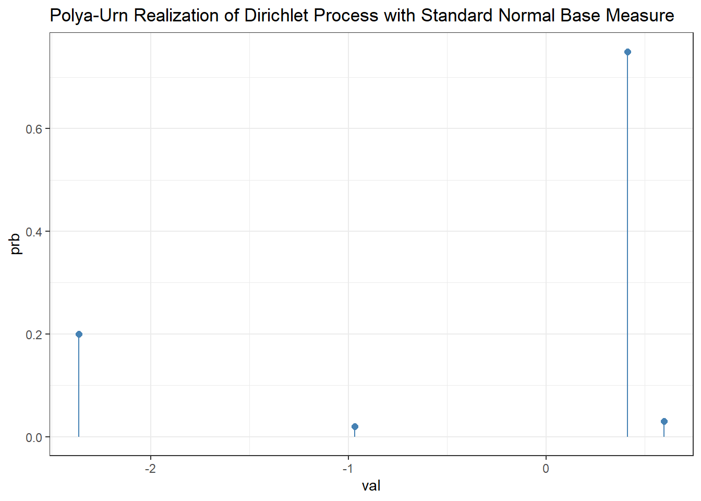

Regular regression setup. Response \(Y\) and covariates \(X \in \mathbb{R}^d\). Then \(Y \mid X \sim f(m(X))\) where \(m(\cdot)\) is some deterministic mean function.
\(m\) specifies the conditional mean of the response, and \(f\) is a distribution. \(f\) characterizes the deviation of the response from the conditional mean. e.g. \(m(X) = X\) and \(f(X) = \beta_0 + X \beta\) (I think).
Regardless, they define the ‘data set’ as \(\{(x_i, y_i)\}_{i = 1}^N\). Given new set of covariates \(x_{\text{new}}\), the prediction is \(\hat{y} = \mathbb{E}[Y \mid x_{\text{new}}]\). In Bayesian regression we do all of this with the posterior expectation.
What the DPGLM does
It produces a regression model by modeling the joint distribution of the covariates and the response.
Specificaly, this is done using a Dirichlet process mixture model.
For each observation, a hidden parameter \(\theta\) is draw
Covariates are generated from a parametric distribution conditioned on \(\theta\)
Them the response is drawn from a GLM conditioned on the covariates and \(\theta\)
Like DPMMs, this is an infinite mixture model. Also like DPMMs, it identifies local regions of patterns.
DPMM Mathematical Background (Review)
In a Bayesian mixture model we assume the true joint density of \(X\) and \(Y\) can be written as a mixture of parametric densities, such as Gaussians or multinomials, conditioned on a hidden parameter \(\theta\). E.g., \(\theta\) includes mean and variance for a Normal mixture.
In the DPGLM, \(\theta\) is split into two parts. \(\theta_x\), which is associated only with the covariates \(X\), and \(\theta_y\) which is associated only with the response \(y\). Thus \(\theta = (\theta_x, \theta_y)\) and the marginal probability of an observation is the continuous mixture
\[
f_0(x,y) = \int_{\mathcal{T}} f(x, y\mid\theta)P(d \theta)
\] Where \(\mathcal{T}\) is the set of all possible parameters and the prior \(P\) is a probability measure on the space \(\mathcal{T}\) .
The Dirichlet process models uncertainty about the prior density \(P\).
If \(P\) is drawn from a DP then it can be integrated out of the conditional distribution of \(\theta_n\) given \(\theta_{1:(n-1)}\). In this case, the random variable \(\Theta_n\) takes a Polya Urn Distribution.
In the above, we assume that \(\Theta_1, \theta_2, \dots \Theta_{n-1} \sim \text{DP}(\alpha, \mathbb{G}_0)\) which are iid draws from a DP with concentration \(\alpha\) and base measure \(\mathbb{G}_0\).
Essentially what Equation \(1\) says is that with probability \(1 / (\alpha + n - 1)\), \(\Theta_n\) takes the value of one of the previously drawn \(\theta_i\)’s and with probability \(1 / (\alpha + n - 1)\) it is drawn from the Base Measure \(\mathbb{G}_0\).
In the above, \(\delta_{\theta_i}\) is the Dirac delta measure, which places all of its mass at the point \(\theta_i\). In the above, the sum of Dirac measures creates a probability distribution over the previous \(\theta_i\)’s. For example, \(1/(n-1) \sum_{i = 1}^{n-1} \delta_{\theta_i}\) would provide uniform probability to select any previous \(\theta_i\). But, this is rescaled with respect to the DP parameter \(\alpha\) to allow for the \(\alpha / (\alpha + n - 1)\) chance of sampling from the base measure \(\mathbb{G}_0\) while remaining a valid probability distribution. (The sum of \(n - 1\) deltas has mass \((n - 1)/(\alpha + n - 1)\) which is the chance \(\Theta_n\) is some previous theta. Then, each specific \(\theta_i\) has individual probability \(1/(\alpha + n - 1)\) of being chosen as \(\Theta_n\))
R Demo
We can quickly incorporate the Blackwell-MacQueen sampler / Polya Urn distribution as follows:
# predictive distribution of a DPblackwell_macqueen_sampler <-function(N, alpha, g0 =function() rnorm(1)) { theta <-numeric(N) theta[1] <-g0() # theta_1 = G0# then, construct iterativelyfor (n in2:N) { p_new <- alpha / (alpha + n -1)if (runif(1) < p_new) {# sample new value from G0 theta[n] <-g0() } else {# sample uniformly from existing theta_1, ..., theta_{n-1} theta[n] <-sample(theta[1:(n -1)], size =1) } }return(theta)}samples <-blackwell_macqueen_sampler(N =100, alpha =0.3)freqs <- (table(samples) /length(samples))theta_n <-data.frame(val =as.numeric(rownames(freqs)),prb =as.numeric(freqs))# theta_n # realization of RV \Theta_nggplot(theta_n, aes(x = val, y = prb)) +geom_segment(aes(x = val, xend = val, y =0, yend = prb), color ="steelblue") +geom_point(size =2, color ="steelblue") +theme_bw() +ggtitle("Polya-Urn Realization of Dirichlet Process with Standard Normal Base Measure")

Understanding the Paramaterization
In the above, the unique\(\theta_{1:n}\) are drawn from the base measure \(\mathbb{G}_0\). Hence, Even though the full sequence \(\{\theta_{i}\}_{i = 1}^n\) is not i.i.d., the unique values are. The clustering comes about because each \(\theta_j\) has some nonzero probability to take a previous \(\theta_{i < j}\) as its value. Further, the concentration parameter \(\alpha\) controls how likely \(\Theta_n\) is to be drawn from \(\mathbb{G}_0\) rather than a previously-realized \(\theta_{1:n}\).
In a Dirichlet Process Mixture, each \(\theta\) is a latent parameter to an observed data point \(x\), i.e. \[
\begin{aligned}
P &\sim \text{DP}(\alpha, \mathbb{G}_0) \\
\Theta_i &\sim P, \text{ for } i \in[1, n] \\
x_i \mid \theta_i &\sim f( \cdot \mid \theta_i) , \text{ for } i \in[1, n]
\end{aligned}
\] Here, \(P\) is a discrete probability measure which takes a DP prior, from base measure \(\mathbb{G}_0\). Each \(\theta_i\) is a latent variable drawn from \(P\). Because \(P\) is discrete, multiple \(\theta_i\)’s will share the same value which allows for clustering.
Generalized Linear Models
GLMs relate a linear model to a potentially nonlinear response via a link function, i.e. logistic, Poisson or multinomial regression links.
Generally, GLMs have three components. The conditional probability model for \(Y\), the linear predictor and the link function.
The probability model for \(Y\), dependent on the covariates \(X\), is therefore:
\[
f(y\mid \eta) = \exp \bigg( \dfrac{y \eta - b(\eta)}{a(\phi)} + c(y, \phi) \bigg)
\] Where the above is the canonical form of the exponential family, and \(a\), \(b\) and \(c\) are known functions specific to the exponential family (the scaling function, dispersion and normalizing functions respectively), \(\theta\) is an arbitrary dispersion parameter and \(\eta\) is the canonical parameter (a function of the predictors in GLMs).
In the above, \(\mathbb{E}[Y] = b^{\prime}(\eta)\) and \(\text{var}(Y) = a(\phi)b^{\prime \prime}(\eta)\).
Using the General Exponential Family form
The canonical exponential family form gives a common framework for modeling different kinds of data (Gaussian, Poisson, Bernoulli, etc.) that come from exponential families.
For example, if we let \(\eta = \mu\), \(b(\eta) = \eta^2/2 = \mu^2/2\), \(a(\phi) = \sigma^2\) and \(c(y, \phi) = - \frac{y^2}{2\sigma^2} - \frac{1}{2}\log(2\pi \sigma^2)\) we have… \[
\begin{aligned}
f(y \mid \eta) &= \exp \bigg( \dfrac{y \eta - b(\eta)}{a(\phi)} + c(y, \phi) \bigg) \\
&= \exp \bigg( \dfrac{y \mu - \frac{\mu^2}{2}}{\sigma^2} + c(y, \phi) \bigg) \\
&= \exp \bigg( \frac{1}{2\sigma^2}(2 y \mu -\mu^2) + c(y, \phi) \bigg) \\
&= \exp \bigg( \frac{1}{2\sigma^2}(2 y \mu -\mu^2) - \frac{y^2}{2\sigma^2} - \frac{1}{2}\log(2\pi \sigma^2) \bigg) \\
&= \dfrac{1}{\exp(\frac{1}{2}\log(2\pi \sigma^2))}\exp \bigg( -\frac{1}{2\sigma^2}(y^2 -2 y \mu +\mu^2)\bigg) \\
&= \dfrac{1}{\sqrt{2 \pi \sigma^2}}\exp\Big( -\frac{1}{2\sigma^2}(y-\mu)^2 \Big)
\end{aligned}
\] Which is the exact density of \(y \sim \mathcal{N}(\mu, \sigma^2)\).
Further, the mean is what we’d expect. \[
\mathbb{E}[Y] = b^{\prime}(\eta) = \dfrac{\text{d}}{\text{d}\eta}\big( \frac{\eta^2}{2}\big) = \eta_{\,\big| \,\eta = \mu} = \mu
\] As is the variance. \[
\text{var}[Y] = a(\phi) b^{\prime\prime}(\eta)= \sigma^2\cdot \dfrac{\text{d}^2}{\text{d}^2\eta}\big( \frac{\eta^2}{2}\big) = \sigma^2
\]
Connection to GLMs
In a GLM, \(\eta\) is estimated by \(X\boldsymbol{\beta}\) through a set of transformations. It can be shown that, in this case, \(b^{\prime}(\eta) = \mu = \mathbb{E}[Y \mid X]\). However, you can also find/choose a link function \(g\) such that \(\mu = g^{-1}(X\boldsymbol{\beta})\) that defines \(\eta\) solely in terms of \(X\boldsymbol{\beta}\).
The flexible nature of GLMs allows us to use them as a local approximation for a global response function.
The Dirichlet Process Mixture of Generalized Linear Models
In the DP-GLM, the authors allow the covariates \(X\) to be modeled by a mixture of exponential-family distributions and the response \(Y\) to be modeled by a GLM conditioned on the inputs. Beyond this, the models are connected by associating a set of GLM coefficients with each exponential family mixture component.
Let \(\theta = (\theta_x, \theta_y)\) denote the bundle of parameters over \(X\) and \(Y \mid X\). Let \(\mathbb{G}_0\) de a base measure on the space of both.
For instance, \(\theta_x\) might be a set of \(d\)-dimensional multivariate Gaussian location \(\mu\) and scale \(\sigma\) parameters for a vector \(\vec{\mathbf{x}}\) of continuous covariates, and \(\theta_y\) could be a \(d + 2\) dimensional vector for their corresponding GLM linear prediction coefficients \(\beta\) along with a GLM dispersion parameter \(\phi\).
The full model is, in this case, for \(i \in[1, n]\)\[
\begin{aligned}
P &\sim \text{DP}(\alpha, \mathbb{G}_0) \\
(\theta_{x,i} , \theta_{y, i}) \mid P &\sim P\\
X_i \mid \theta_{x,i} &\sim f_x( \cdot \mid \theta_{x,i}) \\
Y_i \mid x_i, \theta_{y,i} &\sim \text{GLM}(\cdot \mid x_i, \theta_{y,i})
\end{aligned}
\] The density \(f_x\) describes the covariate distribution. The GLM for \(y\) depends on the form of the response (continuous, count, category, etc.) and how the response relates to the covariates (by the link function).
The DP clusters the covariate-response pairs \((x,y)\). When both are observed (in training), the posterior distribution of this model will cluster data points according to nearby covariates that have the same kind oof relationship as their response.
When the response is unobserved (in testing), its predictive expectation can be understood by clustering the covariates based on training ata, and then predicting the response according to the GLM associated with the covariates’ cluster.
The DP prior also acts as a kernel for the covariates. It measures the distance between two points by the probability that the hidden measure is shared.
Worked Example: Gaussian Model
Let us suppose we have continuous covariates and response variables in \(\mathbb{R}\). In such a case, we model locally with a gaussian distribution.
The \(i\)-th covariate has mean \(\mu_{i,j}\) and variance \(\sigma^2_{i,j}\) for the \(j\)-th dimension (\(j \in [1,d]\)), and the VCV is diagonal for simplicity.
The parameters of the GLM are linear predictors \(\beta_{i0}, \dots \beta_{id}\) with response variance \(\sigma^2_{i, y}\).
Here, then, \(\theta_{x,i} = (\mu_{i, 1:d}, \sigma_{i, 1:d})\) and \(\theta_{y, i} = (\beta_{i, 0:d}, \sigma_{i, y}\) where \(\theta_i = (\theta_x, \theta_y)\). This produces a mixture of multivariate Gaussian random variables. The full model here is…
The authors write how the DP-GLM is used in prediction problems. Namely, given a collection of covariate response pairs \((x_i, y_i)_{i=1}^n\), their goal is to compute the expected response for a new set of covariates. Conditional on the latent parameters that generated the observed data, \(\theta_{1:n}\), the theoretical expectation of the response is: \[
\mathbb{E}[Y \mid x, \theta_{1:n}] = \frac{\alpha}{b}\int_{\mathcal{T}} \mathbb{E}[Y \mid x, \theta] f_x(x\mid \theta) \mathbb{G}_0(\text{d} \theta) + \frac{1}{b}\sum_{i=1}^n \mathbb{E}[Y\mid x, \theta_i]f_x(x \mid \theta_i) \tag{3}
\] The first term is the product of the expectation of the GLM at \(x\) and \(\theta \in \mathcal{T}\), the likelihood of \(x\) given \(\theta\) and the probability density of \(\theta\) under the base measure. It is the term accounting for all possible parameters under the base measure to the expectation. The second term is the product of the expectation of the GLM across the observed parameters \(\theta_{i}\), \(i \in [1,n]\).
In the above, \(b\) is the normalizing constant \[
b = \alpha \int_{\mathcal{T}}f_x(x\mid \theta) \mathbb{G}_0(\text{d} \theta) + \sum_{i=1}^n f_x(x \mid \theta_i)
\] Where \(\mathcal{T}\) is the set of all possible parameters.
Towards Sampling…
As \(\theta_{1:n}\) is not actually known, the unobserved random variables are integrated out of Equation \(3\) using the posterior distribution given the observed data.
Let \(\Pi^{\mathcal{P}}\) denote the DP prior on the set of hidden parameter measures, \(\mathcal{P}\). Let \(\mathcal{M}_{\mathcal{T}}\) be the space of all distributions over the hidden parameters.
The authors note that since \(\int_{\mathcal{T}}f_y(y|x, \theta)f_x(x|\theta)\mathcal{P}(\text{d}\theta)\) is a density for joint \((x,y)\) that \(\Pi^{\mathcal{P}}\)induces a prior on \(\mathcal{F}\), the set of all densities \(f\) on \((x,y)\). They denote this prior \(\Pi^{f}\) with posterior distribution: \[
\Pi^f_n(A) = \dfrac{\int_{A} \prod_{i =1}^n f(X_i, Y_i) \Pi^f(\text{d}f)}{\int_{\mathcal{F}} \prod_{i =1}^n f(X_i, Y_i) \Pi^f(\text{d}f)}
\] Where \(A \subseteq \mathcal{F}\). Similarly \(\Pi_n^{\mathcal{P}}\) is defined (for some subset of \(\mathcal{P}\).)
The regression is then \[
\begin{aligned}
\mathbb{E}[Y|x, (X_i, Y_i)_{i=1}^n] = &\frac{1}{b}\sum_{i = 1}^n \int_{\mathcal{M}_{\mathcal{T}}}\int_{\mathcal{T}}\mathbb{E}[Y|x, \theta_i]f_x(x|\theta_i)\mathcal{P}(\text{d}\theta_i)\Pi_n^{\mathcal{P}}(\text{d}\mathcal{P}) \\
&+ \frac{\alpha}{b}\int_{\mathcal{T}} \mathbb{E}[Y|x, \theta]f_x(x|\theta)\mathbb{G}_0(\text{d}\theta)
\end{aligned} \tag{4}
\] Where \(b\) normalizes the probability of \(Y\) being associated with the parameter \(\theta_i\).
The above is nearly impossible to compute in practice because it requires integration over a hidden random measure. Thus, it is approximated by the average of \(M\) Monte Carlo samples of the expectation conditioned on \(\theta_{1:n}^{(m)}\)